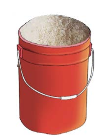
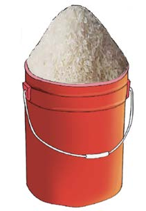

include spoons, cups, boxes, sacks and buckets.
The following picture shows two buckets that contain rice.

Bucket A
Bucket BWhich bucket has more rice? Explain your answer.
Standard tools for measuring mass
Standard tools used for measuring the masses of different things are called weighing balances. The following picture shows examples of weighing balances.


Units for measuring mass
The basic units used for measuring mass are gram and kilogram. A gram is a smaller measurement unit than a kilogram. They are both used for measuring masses of different items in our environment. The unit of gram is usually used for items whose mass is less than one kilogram. For heavier items, the unit of kilogram is used. The relationship between the two units is as follows: